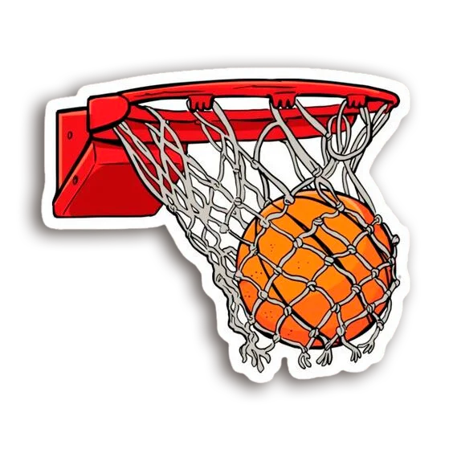

Sobre mim
Olá! Sou Gabriel Fonseca, um jovem de 20 anos do interior do Paraná.
Atualmente, estou dedicando meu tempo aos estudos na Alura, buscando aprimorar minhas habilidades e conhecimentos.
No entanto, uma das minhas paixões é o basquete.fui fisgado pelo fascinante mundo do basquete.
A energia que flui em uma quadra, a estratégia envolvida em cada jogada e a incrível sensação de fazer uma
cesta são experiências que nunca deixam de me cativar. Além disso, o basquete é muito mais do que um esporte para mim
Acredito que o esporte e a aprendizagem são caminhos para alcançar nossos objetivos e sonhos,
e estou determinado a seguir em frente nessa jornada com dedicação e paixão.
